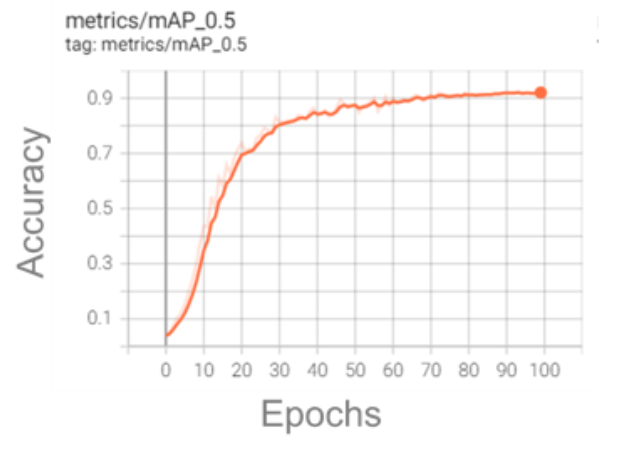

Our goal for this project is to utilize computer vision AI systems to enable in-home pet identification and diagnostics.
We used the computer technology related to computer vision technique. For all the pictures for training the objects have bounding box around them, we used yolov5 to train models. We then optimized performance by adjusting number of epochs, batch size, and image augmentation parameters, and also compared performance for Yolov5 and v8.
Below are some examples of object detection and the graph of relation of accuracy and epochs

In order to improve dataset size and variation, we implemented a synthetic data generation pipeline using Autodesk Maya and allowed us generate any amount photorealistic synthetic images with high randomization and expandability.
We used DeepLabCut to get keypoints detected for different animals. It can detect the joints in a picture or video.